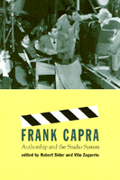

<body bgcolor="#FFFFFF" text="#000000" link="#0000FF" vlink="#CC0000" alink="#CC0000"><center><hr width="350" size="1" align="center" noshade>Legendary film director Frank Capra composed a unique American vision, but how was that vision influenced by the strategies and production style of Columbia Pictures?<hr width="350" size="1" align="center" noshade><p><a href="https://cdcshoppingcart.uchicago.edu/Cart/ChicagoBook.aspx?ISBN=9781566396073&&PRESS=temple" target="_top">Buy this book!</a> | <a href="https://cdcshoppingcart.uchicago.edu/Cart/Cart.aspx?PRESS=temple" target="_top">View Cart</a> | <a href="https://cdcshoppingcart.uchicago.edu/Cart/Cart.aspx?PRESS=temple" target="_top">Check Out</a></p><p></p></center><!--none//--><h1>Frank Capra</h1>
<H2>Authorship and the Studio System</H2>
<h3>edited by Robert Sklar and Vito Zagarrio</h3>
<P>cloth 1-56639-607-7 $59.50, Apr 98, <FONT COLOR=#990033>Out of Stock Unavailable</FONT>
<br>paper 1-56639-608-5 $32.95, Mar 98, <FONT COLOR=#990033>Available</FONT>
<br>Electronic Book 1-43990-489-8 $32.95 <FONT COLOR=#990033>Out of Stock Unavailable</FONT>
<BR> 304 pp
5.5x8.25
25&nbsp;halftones
</P><p>Frank Capra's films have had a lasting impact on American culture. His powerful depiction of American values, myths, and ideals was central to such famous Hollywood films as <I>It Happened One Night, Mr. Smith Goes to Washington, and It's a Wonderful Life.</I> These pre-war films are remembered for their depiction of an individual's overcoming adversity, populist politics, and an unflappable optimist view of life.
<p>This collection of nine essays by leading international film historians analyzes Capra's filmmaking during his most prolific period, from 1928 to 1939, taking a closer look at the more complex aspects of his work. They trace his struggles for autonomy against Columbia Pictures head Harry Cohn, his reputation as an auteur, and the ways in which working within studio modes of production may have enhanced the director's strengths.
<p>The contributors also place their critiques within the context of the changing fortunes of the Hollywood studio system, the impact of the Depression, and Capra's working relationships with other studio staff and directors. The contributors' access to nineteen newly restored Capra films made at Columbia during this period fills this collection with some of the most comprehensive critiques available on the director's early body of work.
<BR>&nbsp;<h2>Excerpt</h2><P>Excerpt available at <a href="http://www.temple.edu/tempress">www.temple.edu/tempress</a></p>
<BR>&nbsp;<h2>Reviews</h2>
<p><i>"The essays in this book are revealing and rich in insight into one of cinemas most important early directors and the economic entity which brought his work into being. Anyone interested in film history will find this to be a very readable and illuminating work."</i>
<br>&#151<b><i><a href="http://www.forewordmagazine.net/reviews/printreviews.aspx?ISBN=1566396077" target="new">ForeWord</a></i></b>
<BR>&nbsp;<h2>Contents</h2><P>
<p>Acknowledgments
<br>Introduction
<br>1. Anatomy of a House Director: Capra, Cohn, and Columbia in the 1930s &#150 Thomas Schatz
<br>2. A Leap into the void: Frank Capra's Apprenticeship to Ideology &#150 Robert Sklar
<br>3. It Is (Not) a Wonderful Life: For a Counter-reading of Frank Capra &#150 Vito Zagarrio
<br>4. Capra and the Abyss: Self-interest versus the Common Good in Depression America &#150 Charles J. Maland
<br>5. <I>It Happened One Night</I>: The Recreation of the Patriarch &#150 Richard Maltby
<br>6. Roosevelt, Arnold, and Capra, (or) the Federalist-Populist Paradox &#150 Guiliana Musico
<br>7. <I>Mr. Smith Goes to Washington</I>: Democratic Forums and Representational Forms &#150 Charles Wolfe
<br>8. Studio Metamorphosis: Columbia's Emergence from Poverty Row &#150 Brian Taves
<br>9. Notes on Columbia Pictures Corporation, 1926-1941, with a New Afterword &#150 Edward Buscombe
<br>Bibliography
<br>Filmography
<br>About the Contributors
<br>Index
</P><BR>&nbsp;<H2>About the Author(s)</H2>
<table><tr><td valign="top"><img src="/tempress/authors/878_au1.gif" height="90" width="75"></td><td width="100%" valign="middle"><p><B>Robert Sklar</B>, Professor of Cinema at New York University, is the co-editor (with Charles Musser) of <I><a href="653_reg.html" target="_top">Resisting Images: Essays on Cinema and History</a></I> (Temple), and the author of numerous books on film, including <I>Movie-Made America: A Cultural History of American Movies, City Boys: Cagney, Bogart, and Garfield</I>, and <I>Film: An International History of the Medium,</I> winner of the Kraszna-Krausz Book Award.</P></td></tr></table><table><tr><td valign="top"><img src="/tempress/authors/878_au2.gif" height="90" width="75"></td><td width="100%" valign="middle"><p><b>Vito Zagarrio</b> teaches film history at the University of Florence and film analysis at the University of Rome III, Italy.</P></td></tr></table>
<P>Contributors: Edward Buscombe, Charles J. Maland, Richard Maltby, Guiliana Musico, Thomas Schatz, Brian Taves, Charles Wolfe, and the editors.</P>
<BR><H2>Subject Categories</H2>
<p><A HREF="/tempress/cinema.html" TARGET="_top">Cinema Studies</a>
</p>
<BR><h2 class="inpageheading">In the series</H2>
<P><I><a href="http://www.temple.edu/tempress/culture.html" onMouseOver="window.status='Click for other books in this series!'; return true;" onMouseOut="window.status=''; return true;" target="_top">Culture and the Moving Image</a></i>, edited by Robert Sklar.
</p><p>The <I>Culture and the Moving Image</I> series, edited by Robert Sklar, seeks to publish innovative scholarship and criticism on cinema, television, and the culture of the moving image. The series will emphasize works that view these media in their broad cultural and social frameworks. Its themes will include a global perspective on the world-wide production of images; the links between film, television, and video art; a concern with issues of race, class, and gender; and an engagement with the growing convergence of history and theory in moving image studies.</p>
<p align="center"><a href="https://cdcshoppingcart.uchicago.edu/Cart/ChicagoBook.aspx?ISBN=9781566396073&&PRESS=temple" target="_top">Buy this book!</a> | <a href="https://cdcshoppingcart.uchicago.edu/Cart/Cart.aspx?PRESS=temple" target="_top">View Cart</a> | <a href="https://cdcshoppingcart.uchicago.edu/Cart/Cart.aspx?PRESS=temple" target="_top">Check Out</a></p><p><font face="Arial" size="1"><a href="copyright.html" onMouseOver="window.status='Web Copyright Policy';return true;" onMouseOut="window.status=''" title="Web Copyright Policy">&copy;</a> 2015 <a href="http://www.temple.edu" target="new" onMouseOver="window.status='Link to Temple University home page';return true;" onMouseOut="window.status=''" title="Link to Temple University home page">Temple University</a>. All Rights Reserved. http://www.temple.edu/tempress/titles/878_reg.html</font></p>